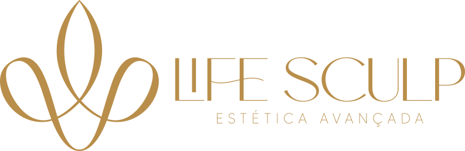
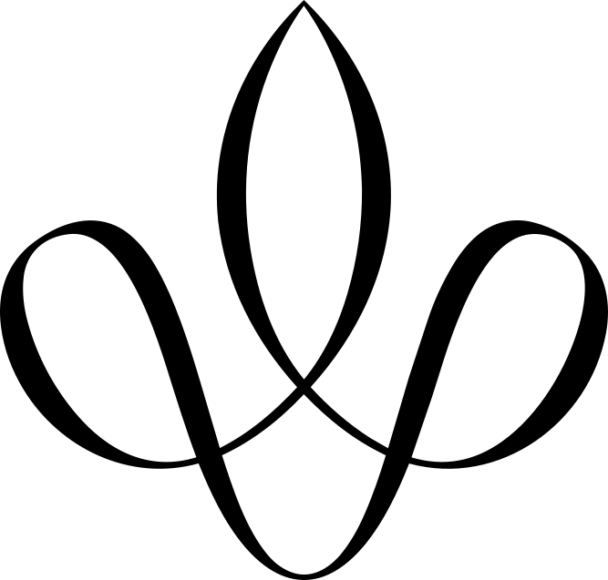
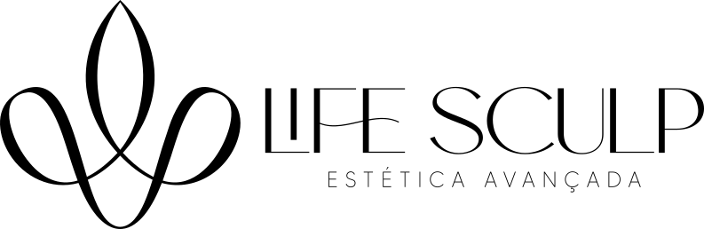
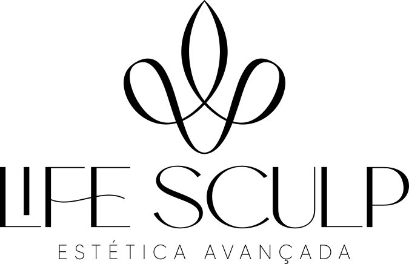

Sofisticada
O essencial, apresentado com intenção.

Uma nova expressão de beleza,
cuidado e identidade.
A identidade visual da Life Sculp traduz a essência de uma estética contemporânea, onde sofisticação, delicadeza e cuidado se encontram em uma expressão visual única.

A sensibilidade e a presença que
orientam cada expressão visual.
Sofisticação que se revela na simplicidade.
Cuidado em cada linha.
Identidade em cada detalhe.
O essencial, apresentado com intenção.
Tons quentes, suavidade e proximidade.
Clareza visual e liberdade de composição.
Uma assinatura que ocupa seu espaço.
O cuidado começa nos detalhes.
Seu tempo. Sua beleza.
Uma nova expressão de você.
Forma, cor e tipografia.
Um sistema que se reconhece.








Paleta oficial da marca. Os fundos branco e marrom desta apresentação são neutros de apoio da interface.
Expressão da assinatura
Contraponto de apoio
ABCDEFGHIJKLMNOPQRSTUVWXYZ
abcdefghijklmnopqrstuvwxyz
0123456789
!?&@%() — .,
ABCDEFGHIJKLMNOPQRSTUVWXYZ
abcdefghijklmnopqrstuvwxyz
0123456789
!?&@%() — .,
Beleza.
O essencial permanece.
Uma nova expressão de beleza, cuidado e identidade.
Life Sculp / Estética avançada
A mesma essência.
Novos pontos de contato.
Beleza, cuidado
e identidade.
Do espaço ao toque.
A identidade ganha vida.
Life Sculp
Estética avançada
Beleza, cuidado e identidade.
Seu tempo.
Sua beleza.
O cuidado
Beleza & identidadecomeça nos
detalhes.
Uma nova
Life Sculp / Estética avançadaexpressão
de você.